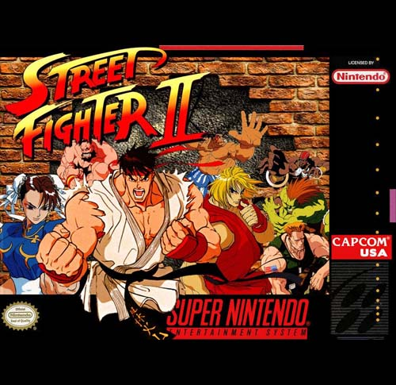

Street Fighter II
Street Fighter II: The World Warrior (ストリートファイターⅡ -The World Warrior- Sutorīto Faitā Tsū - The World Warrior?), também conhecido simplesmente por Street Fighter II, é um jogo competitivo de videogame desenvolvido pela Capcom e originalmente lançado para os sistemas de Arcade em 1991. É o segundo jogo da série Street Fighter e a sequência de Street Fighter, jogo lançado em 1987.
O Street Fighter II original dá a possibilidade ao jogador de escolher oito personagens; a lista inclui Ryu e Ken (os protagonistas do jogo original), mais seis novos personagens de várias nacionalidades. O jogador luta contra sete dos personagens principais, antes de enfrentar os quatro adversários finais controlados pelo CPU, conhecidos como os "Quatro Grandes Mestres". Street Fighter II decorre vários anos depois do primeiro torneio, quando Ryu derrotou Sagat na final. M. Bison, um ditador da Tailândia, organiza um novo torneio e convidou os melhores lutadores do mundo para competir. Chun-Li é notável por ser uma das primeiras mulheres protagonistas nos videojogos, mais bem sucedidas e mais populares. Quando Street Fighter II foi editado, as personagens femininas nos jogos existiam apenas com objectivo de serem salvas, ou então faziam parte do elenco de outros personagens secundários, como habitantes de uma cidade, namoradas, oponentes ocasionais, ou simplesmente como decoração em segundo plano. Para além do género RPG, havia poucas heroínas nos videojogos baseados em acção. Depois do sucesso de Street Fighter II e com a popularidade de Chun-Li, protagonistas femininos tornaram-se cada vez mais comuns. Desde então, em jogos onde se pode escolher personagens, pelo menos, há sempre no geral, uma ou duas personagens femininas que se pode selecionar.